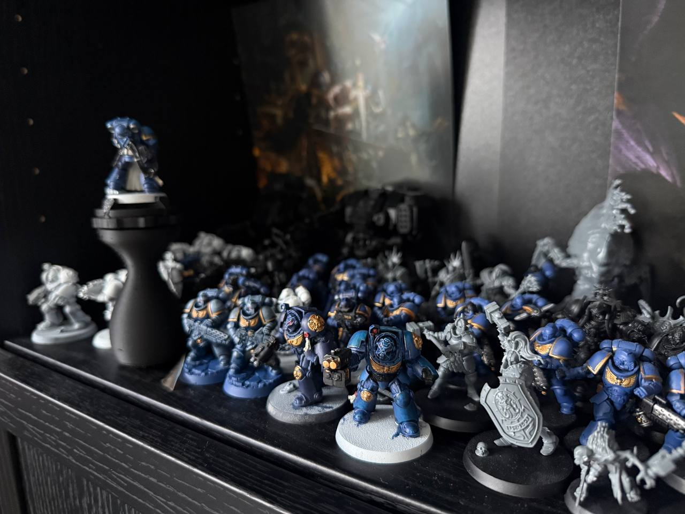
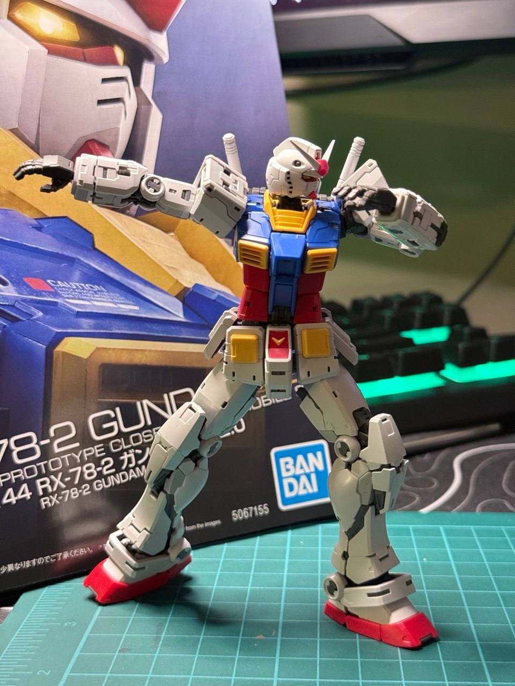

🎮 Favorite Games
Hades, Vampire Survivors, Darksiders 2, Cyberpunk 2077, Skyrim, God of War Ragnarök, Supreme Commander 2.
Beyond Work
When I'm not coding, you'll find me gaming, building and painting miniatures, or out on a trail. These hobbies keep me creative and balanced.
Video Games
Passionate gamer with a love for action RPGs, roguelikes, and strategy games.
Hades, Vampire Survivors, Darksiders 2, Cyberpunk 2077, Skyrim, God of War Ragnarök, Supreme Commander 2.
Action RPGs, roguelikes, open-world adventures, and real-time strategy games.
PC gaming enthusiast. Always on the lookout for the next great indie or AAA title.
Creative Hobbies
It seems like I am addicted to plastic crack!
Building and painting Warhammer miniatures. There's something deeply satisfying about assembling an army piece by piece and bringing it to life with paint. The hobby combines creativity, patience, and strategy—both at the painting table and on the battlefield.

Building Gundam plastic model kits. From High Grade to Master Grade, each kit is a rewarding build that results in a detailed mecha figure. The precision engineering of Bandai kits makes every build a joy.

Staying Active
Exploring trails and enjoying nature keeps me grounded. Whether it's a day hike or a longer trek, there's nothing like getting out into the wilderness to clear the mind and challenge the body.
Regular gym sessions help me stay fit and healthy. A good balance of strength training and cardio keeps me energized for both work and hobbies.